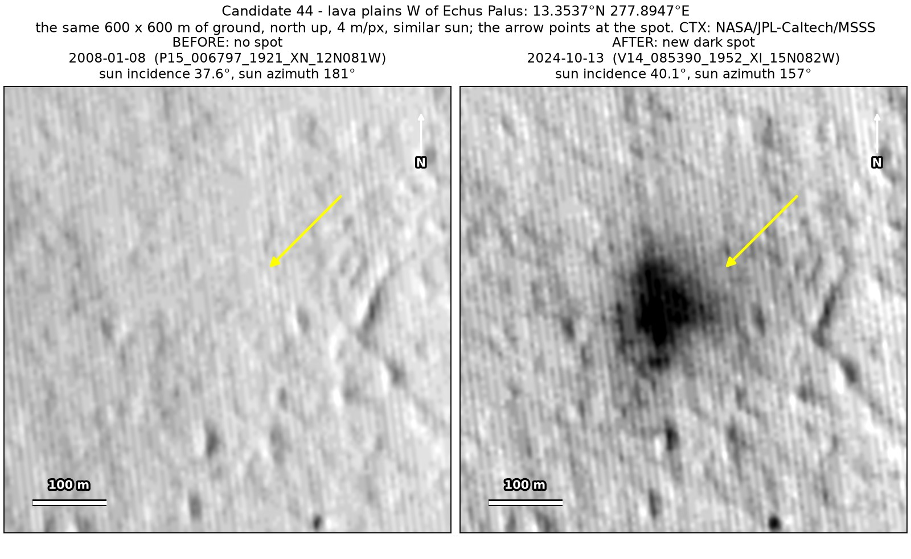
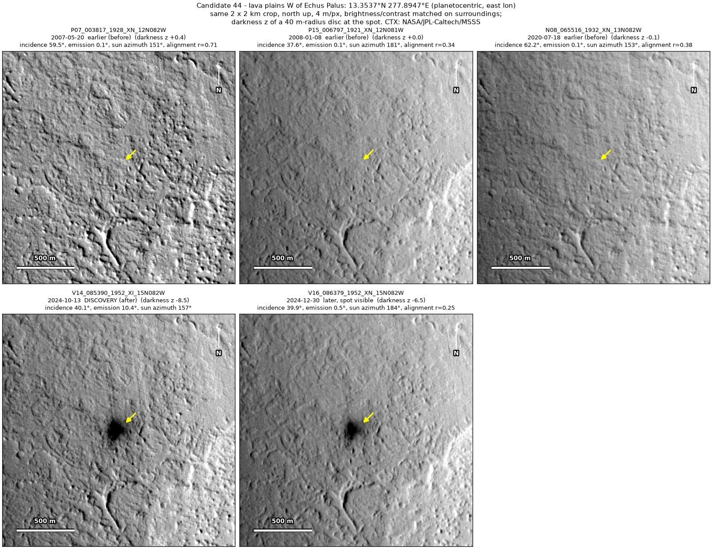
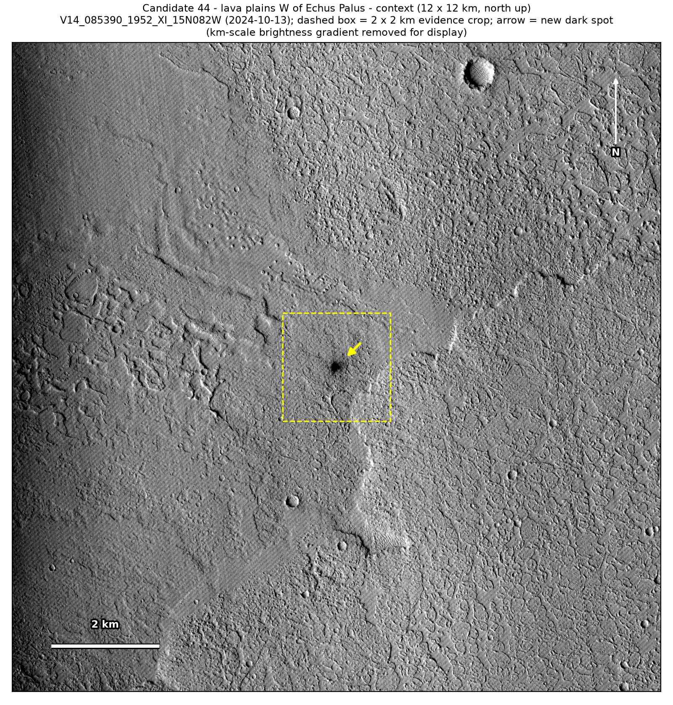
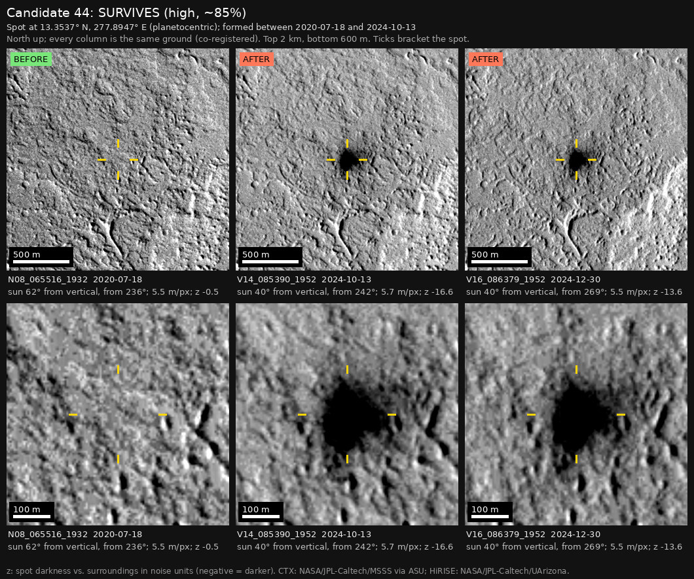

Professor of Mathematics
Paata Ivanisvili
Department of Mathematics, University of California, Irvine

← Possible new impact sites on Mars
Candidate 44: Lava plains west of Echus Palus
Strong · roughly 85%

What changed. A very dark, irregular patch about 190 by 195 m, with a soft fringe, appeared on the lava plains 58 km west of Echus Palus between July 2020 and October 2024. It is still there in December 2024.
Why it may be a new impact. Images from 2008 and July 2020 show nothing there, and both would have shown it; the 2008 image was taken under the same sun as the December 2024 one, so the patch is not a shadow. The plains are flat, so it is not a slope streak, and it is not shaped like a dust-devil track. The blast zones of new impacts are often irregular and this large.
- Location
- 13.354° N, 277.895° E (82.105° W)
- Absent
- 8 January 2008 and 18 July 2020
- Present
- 13 October 2024 and 30 December 2024
- Size
- Very dark, irregular patch about 190 × 195 m, with a soft fringe
- Confidence
- Strong candidate; roughly 85% that it is a new impact.
- Caveat
- It has been followed for only two and a half months, so a short-lived dark patch made by wind is not excluded. It lies outside every footprint of the high-resolution HiRISE camera. The nearest HiRISE image, taken in April 2026, is aimed at another candidate impact site 27 km away, a separate event. Like every candidate here, it is unconfirmed: see the caveat.


